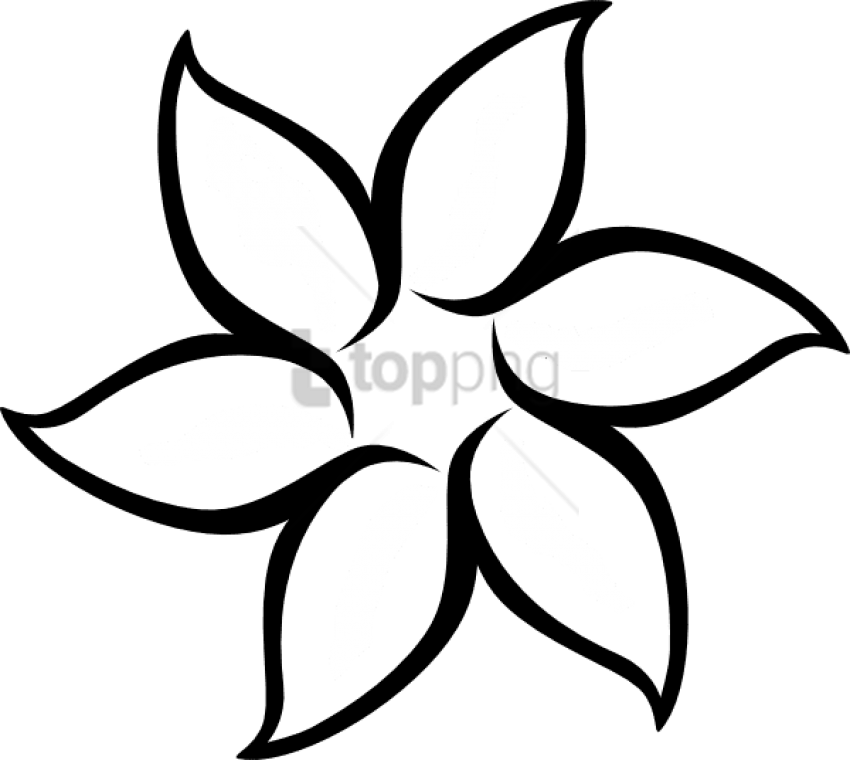
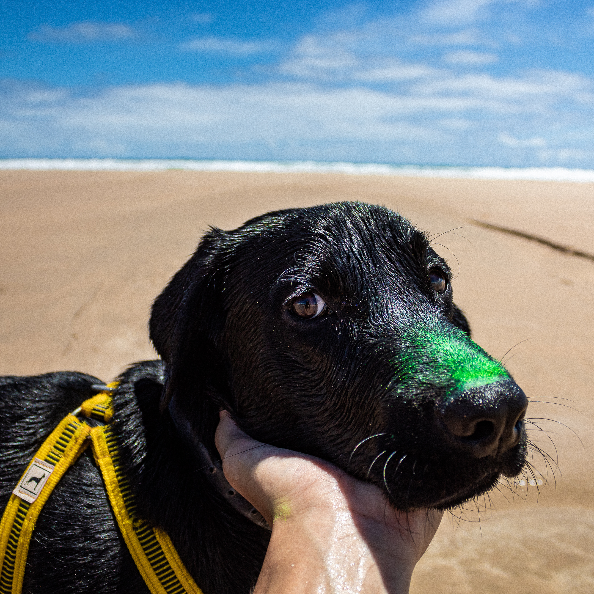
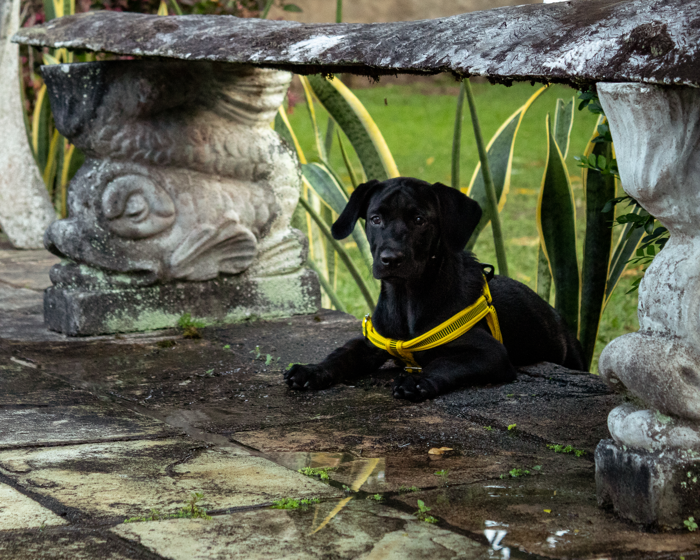
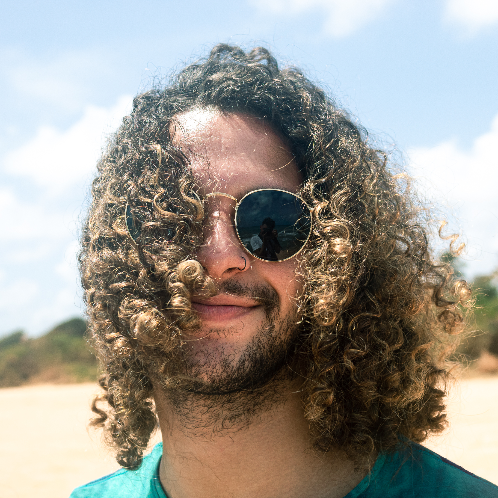
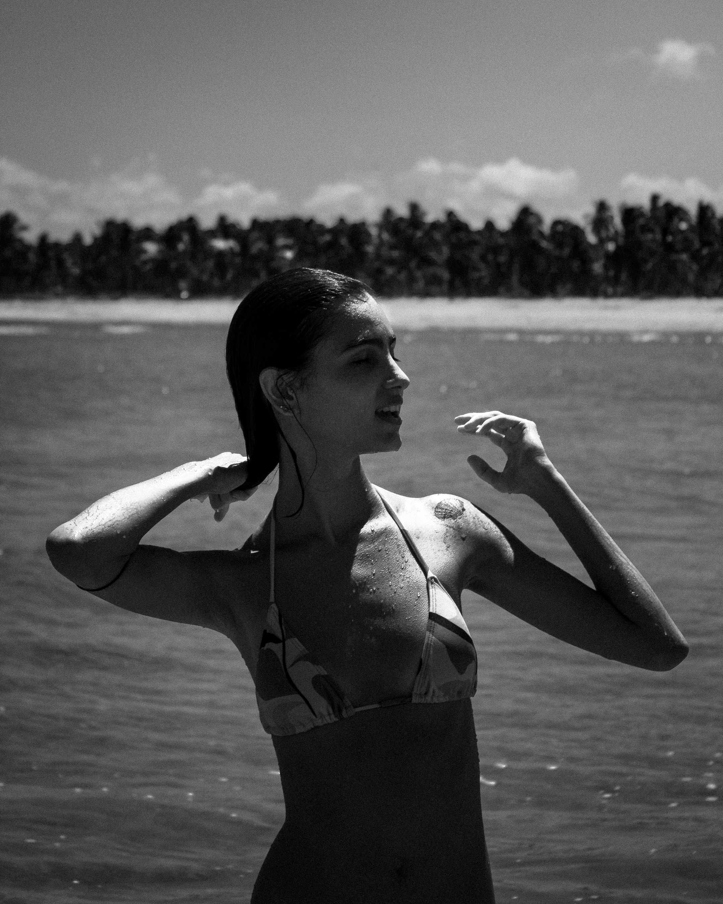
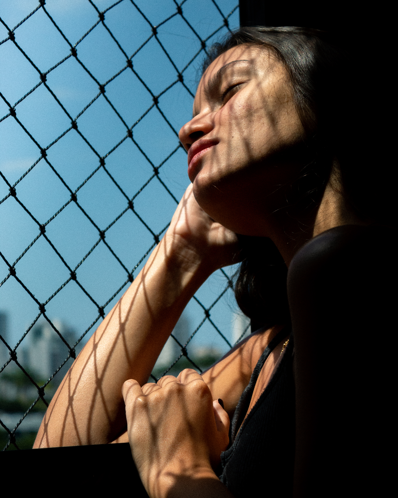
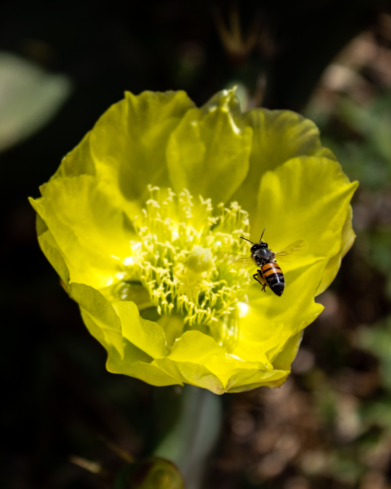
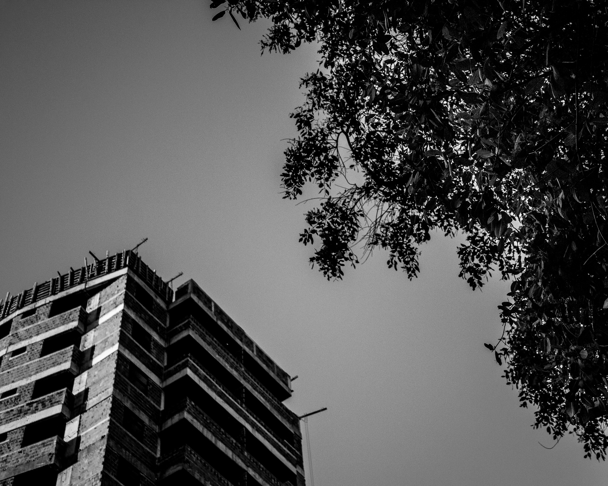
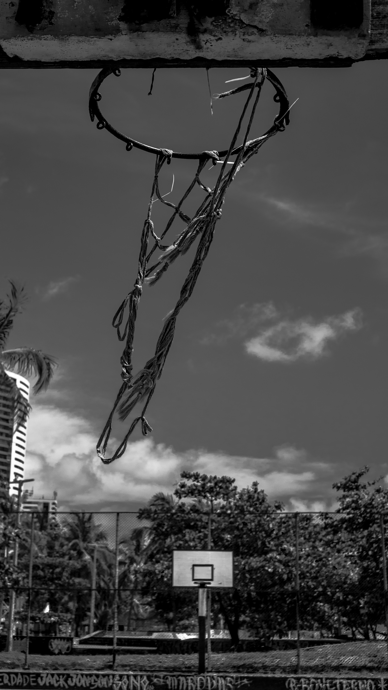

Sobre Mim

Basquete

Jogo basquete desde os 12 anos e já viajei para Brasília para um campeonato representando o Sport Club do Recife
Fotografia

Sou apaixonado pela arte da fotografia, apesar de preferir bem mais tirar a foto do que sair nela.
Robótica
Me apaixonei por robôs fazendo robótica no RobôCIn, a maior equipe de robótica do Brasil.
Plantas
Eterno aluno da mãe natureza, aprendendo constantemente os benefícios dos seus frutos.
Viajar
Conhecer pessoas e lugares novos compartilhando vivências é um dos maiores prazeres da vida.
Café
Eu só gosto MUITO de café, sério.
Fotos
Esse é o meu cachorro: Chico
O nome dele é em homenagem a Chico Science
 
Gosto de fotografar meus amigos quando viajamos. Consigo treinar o que estudo e me divertir fazendo.
  
Não defini nenhuma área da fotografia ainda, mas estou amando essa exploração!
  Informações para contato:
Manda Jobs pufavô 🥺
felipedurant35@gmail.com
@felipedurant
GitHub
github.com/felipedurant